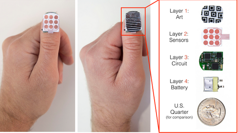
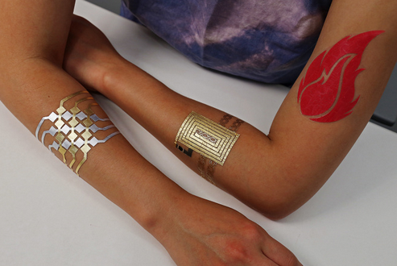
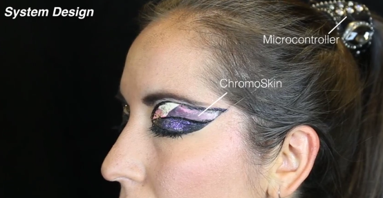
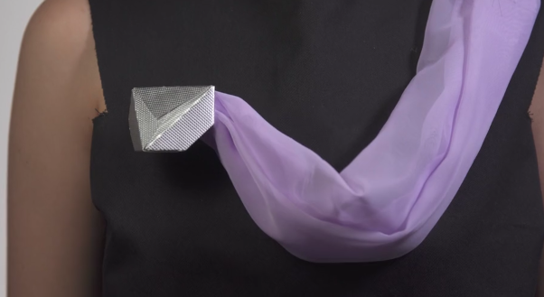
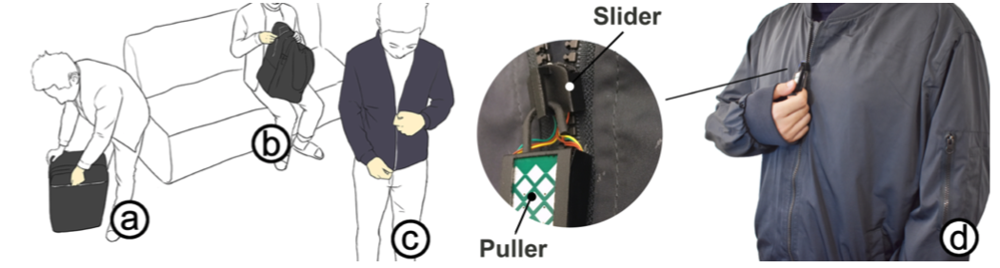
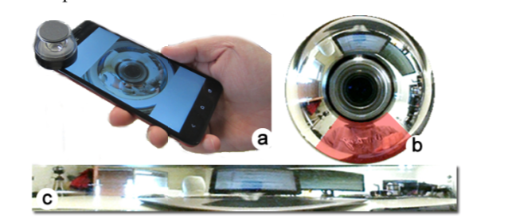

6.810 Engineering Interactive Technologies (fall 2020)
Group Project (4 students per team)
Topic: Wearable Technologies
Wearables come in many forms and perform a variety of functions.
Here are some examples:
- Smart jewelry, such as rings, wristbands, watches and pins. Smaller devices typically work in coordination with a smartphone app for display and interaction.
- Body-mounted sensors that monitor and transmit biological data for healthcare purposes.
- Fitness trackers, often in the form of wristbands or straps, that monitor things like physical activity and vital signs. Trackers may connect wirelessly to an app for data storage, processing and reporting.
- Smart clothing with built-in technology that can perform a variety of tasks including fitness or health monitoring, interacting with phones and other devices and changing fabric characteristics to suit the user’s preference, activity or environment.
- Augmented reality (AR) headsets that integrate digital information into a display of the user’s environment and mixed reality (MR) headsets that integrate physical reality and digital content in a way that enables interaction with and among real-world and virtual objects.
- AI hearing aids that can filter out unwanted noises and automatically adapt for best performance in the user’s current environment. Such devices, sometimes referred to as hearables, can also incorporate capabilities such as fitness tracking, audio streaming and translation.






Your Task: Design and build an novel Wearable Device
During this group project, you will:
- brainstorm different ideas and select one for your project
- build the physical prototype including all fabrication and electronics assembly
- process and filter your sensor signals
- visualize your sensor data and what your wearable is detecting via Processing
- run a user study on your tool to gather user feedback and evaluate your tools effectiveness
- make a rotoscope of your wearable technology, take high quality photos, and make a video, then upload all your materials onto a project website
Grading
The project grade makes up 40% of your final grade.
You can get 100pts on your project, distributed across the following parts:
- Creativity of Idea (10%)
- Technical Proposal (10%)
- Weekly Milestones (25% total, 5% each for 5 milestones)
- Midterm Presentation (10%): Overall Project Progress & Quality of Results so far
- User Study (10%)
- Final Presentation and Quality of Overall Prototype (20%)
- Presentation Materials for Project: (10%): Rotoscope, Photos, Video, Website.
Timeline:
| September 9, 2020 | Topic Announced |
| September 23 (1pm), 2020 | Teams due |
| October 16 (1pm), 2020 | Upload & Present Ideas |
| October 23 (1pm), 2020 | Technical Proposal |
| October 30 (1pm), 2020 | Milestone 1 |
| November 6 (1pm), 2020 | Milestone 2 |
| November 13 (1pm), 2020 | Milestone 3 |
| November 18 (1pm), 2020 | Midterm Presentation |
| November 20 (1pm), 2020 | Milestone 4 |
| December 4 (1pm), 2020 | Milestone 5 |
| December 9 (1pm), 2020 | Final Presentations and Final Documentation |
Buying Materials
Budget:
$50 per student ($200 per team of four students)
Ordering Parts
2.1) We order for you: If you want to order a part, add a line for your part to this google spreadsheet. We'll make daily orders at the start of the project period, and additional orders later as needed. For inexpensive parts, plan for breakage. If a part costs $2, order more than you'll need to so minimize downtime from re-ordering.
2.2) You order yourself: You can also buy parts on your own and we can try to reimburse you later (not recommended, lots of extra work for both you and the teaching team). Note that you will be given or mailed a physical check in January as reimbursement. We need all paper receipts from you in order to reimburse you and the parts need to be shipped to Junyi Zhu, MIT CSAIL, 32 Vassar Street, 32-273, Cambridge, MA 02139. Parts ordered to your home address cannot be reimbursed as MIT will not understand why we should reimburse you for 'personal' orders you shipped to your room or apartment.
3) Free Parts
Small parts like resistors, capacitors, some types of LEDs and certain chips, we will already have in stock (or you can ask EDS), so they don't count towards your budget.
Team Folders in Google Drive
1) Project Folder (Google Drive)
We'll be sharing files via this Google drive folder. Each team will be given their own folder to share materials with each other and with the teaching staff, and there will be a class-wide folder as well. Your team folder is where you'll upload project proposal, final report, code, etc. The class-wide folder is where the parts spreadsheet, teaming sheet, etc. live.
2) Template files: Default Team 00
The team folder 00 in the google drive has example template files for all deliverables. Copy them into your team folder to get started.
Weekly Milestone Meetings
Since 6.08 is a prerequisit, you should be familiar with this milestone structure.
Fill out Milestone Spreadsheet: Every week you will write down what you plan to accomplish during the week in a milestone spreadsheet. You will also write down what you will demo to the teaching team to showcase that you successfully accomplished your goal for the week.
Prepare for Milestone meetings with Staff: Before you will come to the staff meeting, you will make a short video demonstrating your milestone and upload it to your team folder google drive in the corresponding milestone folder. This will speed up the process of us learning what is new this week.
Milestone meetings with Staff (20 min per team): Every friday you will meet for approximately 20 minutes with the teaching team. You can find the weekly meeting time for your team in this document. At the meeting, we will spend the first 10 minutes looking at your results. We will then spend the next 10 minutes discussing any issues you may have and your plans for next week.